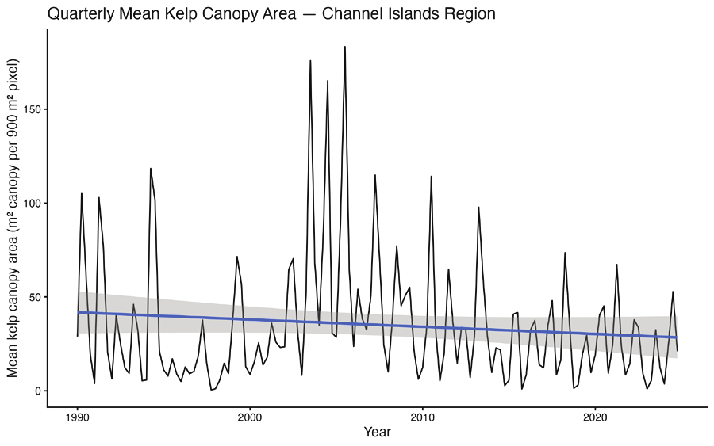
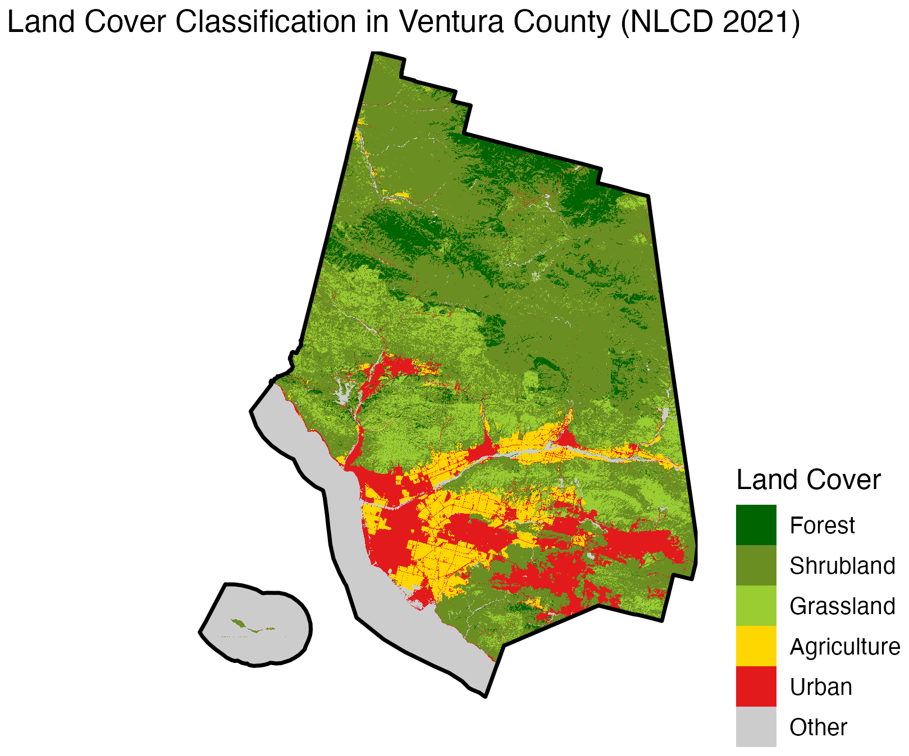
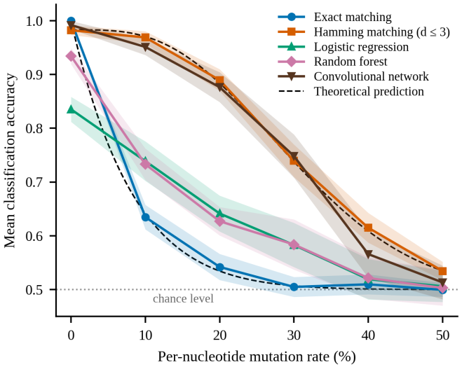

Research
Three projects, each one starting from something I'd seen or wondered about. Click through for a summary and the full paper.

Giant kelp, warming, and dissolved oxygen
I've dived in the Channel Islands kelp forests, so I wanted to know what happens to them when the water warms. Using 35 years of public ocean and satellite data, I found that the kelp canopy shrinks about one season after a warm spell, not right away.
Published · International Journal of High School Research, Nov 2026
Read the summary →
Wildlife roadkill and habitat connectivity
Where do animals get hit crossing roads in Ventura County, and what does that say about where their habitat is cut off? I mapped roadkill reports against land cover and the road network to find the spots where wildlife and traffic meet.
Selected for publication · Journal of Emerging Investigators
Read the summary →
Mutated DNA motif detection
Can machine learning find a DNA motif better than a simple mismatch count once the motif starts to mutate? I ran 180 simulated datasets to find out. Once mutations were in the picture, the simple method won every time.
Submitted · Columbia Junior Science Journal
Read the summary →